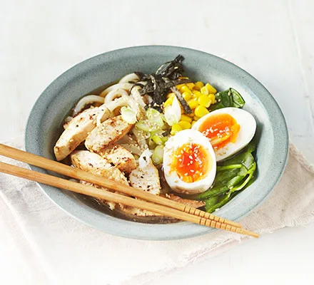

Go Back

Japanese Ranmen Noodle
With this simple ramen recipe, indulge in one of the cuisines that is currently most popular in Japan. Since the Japanese have adopted ramen, which is essentially a bowl of noodle soup with toppings and was originally from China, there are now countless variants and regional flavors. Enjoy these ramen noodles for lunch or dinner, and after you feel more comfortable, experiment with some of the alternate serving ideas listed below.
Recipes/Ingredients:
- 700ml chicken stock
- 3 garlic cloves, halved
- 4 tbsp soy sauce, plus extra to season
- 1 tsp Worcestershire sauce
- thumb-sized piece of ginger, sliced
- ½ tsp Chinese five spice
- pinch of chilli powder
- 1 tsp white sugar (optional)
- 375g ramen noodles
- 400g sliced cooked pork or chicken breast
- 2 tsp sesame oil
For the Garnish
- 100g baby spinach
- 4 tbsp sweetcorn
- 4 boiled eggs, peeled and halved
- 1 sheet dried nori, finely shredded
- sliced green spring onions or shallots
- sprinkle of sesame seeds
Procedure:
- Mix 700ml chicken stock, 3 halved garlic cloves, 4 tbsp soy sauce, 1 tsp Worcestershire sauce,
a sliced thumb-sized piece of ginger, ½ tsp Chinese five spice,
pinch of chilli powder and 300ml water
in a stockpot or large saucepan, bring to the boil, then reduce the heat and simmer for 5 mins
- Taste the stock – add 1 tsp white sugar or a little more soy sauce to make it sweeter or saltier to your liking
- Cook 375g ramen noodles following the pack instructions, then drain and set aside.
- Slice 400g cooked pork or chicken, fry in 2 tsp sesame oil until just starting to brown, then set aside.
- Divide the noodles between four bowls. Top each with a quarter of the meat, 25g spinach,
1 tbsp sweetcorn and two boiled egg halves each.
- Strain the stock into a clean pan, then bring to the boil once again.
- Divide the stock between the bowls, then sprinkle over 1 shredded nori sheet,
sliced spring onions or shallots and a sprinkle of sesame seeds. Allow the spinach to wilt slightly before serving.